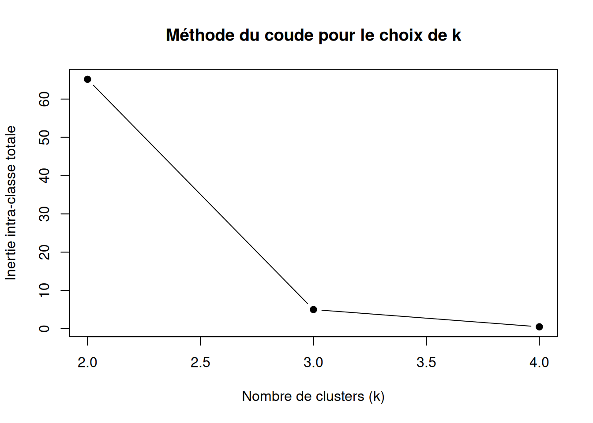

L’algorithme des K-means, également appelé méthode des centres mobiles ou algorithme de Lloyd, est une méthode de classification non supervisée visant à regrouper un ensemble d’observations en K groupes homogènes, appelés clusters. Le but est de déterminer une partition des données telle que les observations appartenant à un même groupe soient similaires entre elles, et différentes des observations des autres groupes. On considère que les observations \(x= {x_₁, .., x_ₙ}\) sont décrites par p variables (\(x_n\) appartient à ℝᵖ) et que l’espace est munie est de la métrique (généralement distance euclidienne).Pour simplifier les notations,on supposera que chaque observation a le même poids.
Algorithme de Lloyd (k-means)
Algorithme des k-means
La méthode des centres mobiles a pour but de fournir une partition de \(x= {x_1, .., x_n}\).
Principe : Pour l’ensemble d’observations \(x= {x_1, .., x_1}\), on suppose qu’il existe
\(C^k = {C_n, .., C_k}\) tel que \(x = ⋃ₖ₌₁ᴷ C_k\) est disjoint
Etape 1. On commence par choisir K observations différentes : \({μ_1, .., μ_n}\)
Etape 2. On réalise itérativement une succession ces actions:
Pour chaque observation \(x= {x_1, .., x_n}\) on trouve son centre (barycentre) le plus proche pour créer \(C_k\) = {ensemble d’observations les plus proches du centre \(μ_k\)}
Dans chaque nouvelle classe Cₖ on définit le nouveau centre de classe \(μ_k\) comme étant le barycentre de \(C_k\).
Etape 3. on réitère l’étape 1.
Remarques
L’algorithme s’arrête lorsque la partition des classes ne change plus (critère de convergence)
l’algorithme ne s’applique que sur des données quantitatives
si les barycentres sont donnés, on commence l’algorithme avec ces barycentres.
avantage, limite et spécificité de l’algorithme
avantage : algorithme rapide
limites: besoin de spécifier le nombre de classes K
spécificité : minimisation de l’inertie intra-classe
Exemple 1
Voici un exemple de script R utilisant l’algorithme k-means pour trouver les classes (les clusters) des données x={1, 2, 9, 12, 20} avec les barycentres µ₁=1 et μ₂=7
Itération 1
Etape 1 : µ₁=1 et μ₂=7 sont donnés par hypothèse
Etape 2 : Commençons par calculer la distance de chaque élément de x par rapport à µ₁=1 et μ₂=7
# Fonction calculant les distances à un barycentredistance_au_centre <-function(x, mu) {# x : vecteur numérique# mu : valeur numérique du barycentreabs(x - mu)}x <-c(1, 2, 9, 12, 20)mu1 <-1mu2 <-7distances1 <-distance_au_centre(x, mu1)df1<-data.frame(points = x, distance = distances1)distances2 <-distance_au_centre(x, mu2)df2<-data.frame(points = x, distance = distances2)df_merged <-merge(df1, df2, by="points", suffixes =c("_mu1", "_mu2"))print(df_merged)
Etape 2 : les classes sont telles que la distance d(x,µ3) d(x,μ4) soit minimale. Le regroupement ne change pas de la 1ère à la 2ème itération (critère de convergence) donc les classes sont {1,2} et {9,12,20}.
Sous R, la fonction kmeans permet directement de réaliser le regroupement selon l’algorithme des k-means.
# donnéesk1 <-2x1 <-c(1, 2, 9, 12, 20)init1 <-matrix(c(1, 7), ncol =1) # centres initiaux# k-meansres1 <-kmeans(x1, centers = init1, iter.max =10)# regroupement des données par classeclasses1 <-split(x1, res1$cluster)# affichage des classes et de leurs élémentscat("\nÉléments par classe :\n")
Éléments par classe :
for (i inseq_along(classes1)) {cat(sprintf("Classe %d : %s\n", i, paste(classes1[[i]], collapse =", ")))}
Classe 1 : 1, 2
Classe 2 : 9, 12, 20
# affichage des centres finauxcat("Centres finaux :\n")
Voici un exemple de script R utilisant l’algorithme k-means pour trouver les classes (les clusters) des données x={1, 2, 9, 12, 20} avec les barycentres µ1 =1, µ2 =12 et µ3 =20
# donnéesk2 <-3x2 <-c(1, 2, 9, 12, 20)init2 <-matrix(c(1, 12, 20), ncol =1) # centres initiaux# k-meansres2 <-kmeans(x2, centers = init2, iter.max =10)# regroupement des données par classeclasses2 <-split(x2, res2$cluster)# affichage des classes et de leurs élémentscat("\nÉléments par classe :\n")
Éléments par classe :
for (i inseq_along(classes2)) {cat(sprintf("Classe %d : %s\n", i, paste(classes2[[i]], collapse =", ")))}
Classe 1 : 1, 2
Classe 2 : 9, 12
Classe 3 : 20
# affichage des centres finauxcat("Centres finaux :\n")
Centres finaux :
print(res2$centers)
[,1]
1 1.5
2 10.5
3 20.0
Inertie intra-classe
Définition
L’inertie intra-classe de x = {x1,..,xn} par rapport à la partition \[C_K = \{\,C_1,\,C_2,\,\dots,\,C_K\} \] et les centres des classes dans \(µ = {µ_1,..,µ_K}\) s’écrit: IW =\(\sum_{k=1}^K d²(xi, µk)\) Notons-la IW(C,µ) à partir de maintenant.
L’algorithme de Lloyd permet de diminuer l’inertie intra-classe IW à chaque itération. Ainsi : \(\mathrm{IW}(C^{(m)}, \mu^{(m)}) \ge \mathrm{IW}(C^{(m+1)}, \mu^{(m)})\)
La suite numérique \(\mathrm{IW}(C^{(m)}, \mu^{(m)})\) est stationnaire(i.e.,à partir d’un certain nombre d’itérations,elle prend toujours la même valeur).
Voici un exemple de script R utilisant l’algorithme k-means pour trouver les classes (les clusters) des données x={1, 2, 9, 12, 20} avec les barycentres µ1 =1, µ2 =9, µ3 =12 et µ4 =20.
# donnéesx3 <-c(1, 2, 9, 12, 20)init3 <-matrix(c(1, 9, 12, 20), ncol =1) # centres initiaux# k-meansres3 <-kmeans(x3, centers = init3, iter.max =10)# regroupement des données par classeclasses3 <-split(x3, res3$cluster)# affichage des classes et de leurs élémentscat("\nÉléments par classe :\n")
Éléments par classe :
for (i inseq_along(classes3)) {cat(sprintf("Classe %d : %s\n", i, paste(classes3[[i]], collapse =", ")))}
Classe 1 : 1, 2
Classe 2 : 9
Classe 3 : 12
Classe 4 : 20
# affichage des centres finauxcat("Centres finaux :\n")
Le critère du coude est une méthode visuelle consistant à tracer l’inertie intra de k-means en fonction de k et à choisir le nombre de clusters correspondant au point d’inflexion de la courbe.
# vecteur de valeurs de k à testerks <-2:4# pré-allocation d’un vecteur pour stocker l’inertie totaleinertias <-c(total_inertia_alt1, total_inertia_alt2, total_inertia_alt3)# tracé de la courbe inertie vs kplot(ks, inertias,type ="b", # points reliés par des segmentspch =19, # symbole plein pour les pointsxlab ="Nombre de clusters (k)",ylab ="Inertie intra-classe totale",main ="Méthode du coude pour le choix de k")

Conclusion : La méthode du coude privilégie donc 3 clusters qui permettent de capturer la plus grande partie de l’inertie intra-classe. En effet, ajouter une 4ème classe, n’apporte qu’un faible gain d’inertie intra-classe.